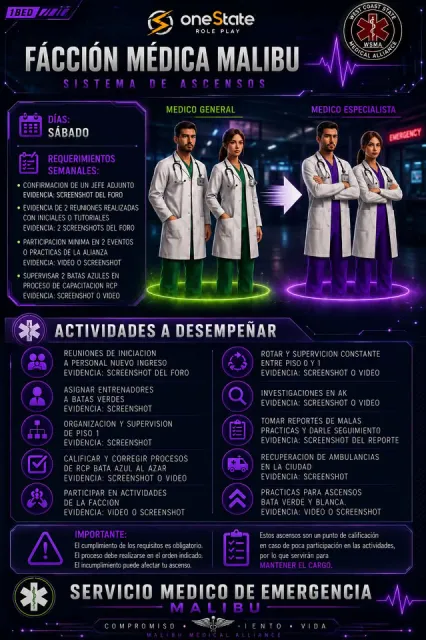
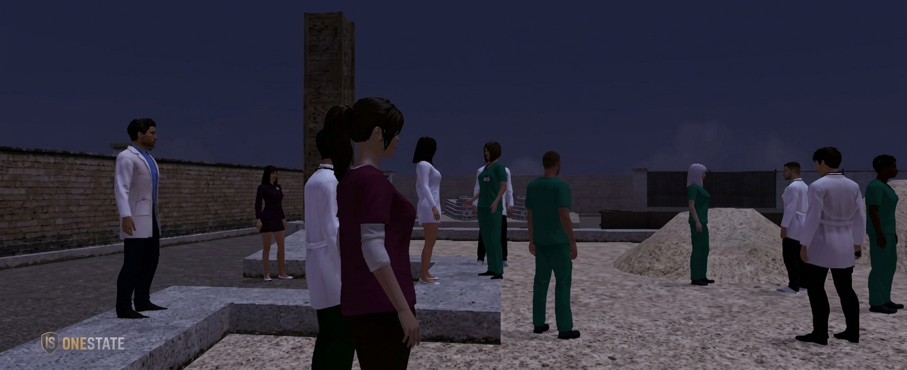
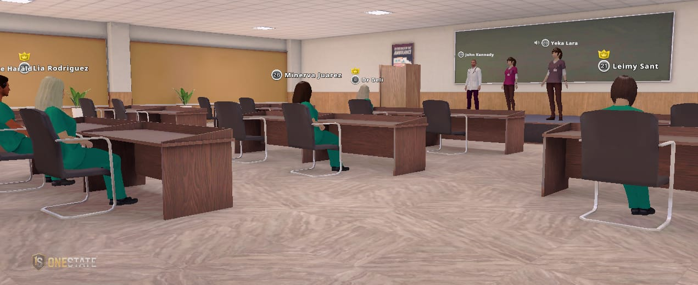
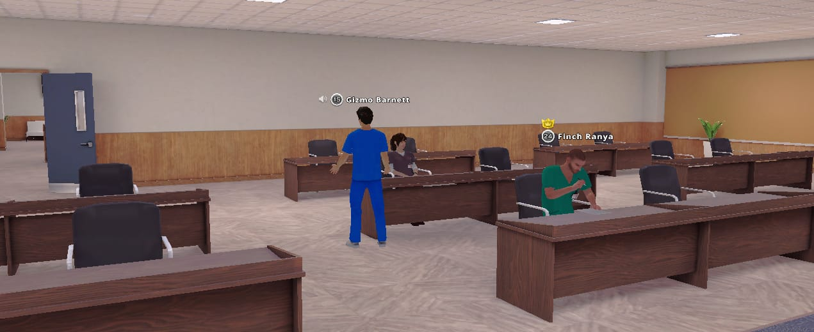

05
🖼️ Flyer del ascenso
Tocá para verlo en grande.
Misma pasión · Mayor responsabilidad
Advertencia: para conservar tu cargo es indispensable demostrar compromiso constante, cumplir con las tareas asignadas y participar activamente en uno de los tres departamentos establecidos.
Evidencia: screenshot del foro.
🔍 Tocá para ver el detalle

Con iniciales (personal nuevo) o tutoriales. Evidencia: 2 screenshots del foro.
🔍 Tocá para ver el detalle

Participación en eventos o prácticas de la alianza. Evidencia: video o screenshot.
🔍 Tocá para ver el detalle

En proceso de capacitación RCP. Evidencia: screenshot o video.
🔍 Tocá para ver el detalle

Tocá para verlo en grande.
Presentar la confirmación de un jefe adjunto.
Presentar evidencia de 2 reuniones realizadas con iniciales o tutoriales.
Participar como mínimo en 2 eventos o prácticas de la alianza.
Supervisar a 2 batas azules en su proceso de capacitación RCP.
Además de los requisitos de ascenso, cada rango tiene tareas propias dentro de la facción. Cumplirlas es parte del compromiso constante que se pide para mantener la bata.